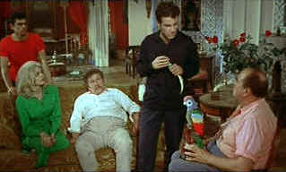

|
Topkapi/ B+,C+ |
|
MGM/1964/119/WS 1.66 |
This very enjoyable caper concoction is quite
literally taken to the rooftops by a splendid Peter Ustinov
performance. Ustinov's Arthur Simon Simpson is a jewel as precious as any of
the emerald's encrusted in the famed sultan's dagger housed in the Turkish
museum Topkapi.
Jules Dassin, director of such classic noir films as,
Night and the City, The Naked City and Brute Force, as well as
the French triumph,
Rififi,
beautifully blends suspense and humor in his direction. It is execution
rather than plot that makes the film so successful. Stealing a
magnificent gem from the Topkapi museum in Istanbul is the excuse for
banding together an international team of specialists that interact
delightful. Caper execution is elegant in its simplicity. I'd rather see a
cut to pully than a computer screen.
 |
| Fine
details. ©MGM |
The exotic setting sparks delight through finely
realized photographic compositions as does the crisply executed score by
Manos Hadjidakis. Reminiscent in some ways of Rififi's caper,
capturing the jeweled dagger provides breath-holding entertainment
from treat from start to finish. Topkapi a broadly appealing film
that comfortably bridges generation spans.
MGM delivers a decent transfer. There a few
patches of softness and the image is seldom as sharp as it could be. Some
dirt and flashing is evident in the original elements. The color is often
intense and pleasing while at other moments it has a slightly worn look.
Shadow detail is good. Blacks are comfortably and consistently deep. A bit
more could have been extracted from an anamorphic transfer. These MGM
catalog 1.66 widescreen releases appear to be compromises of original 1.85
compositions, though Topkapi does not suffer from obvious cropping.
The mono soundtrack is clean and adequately delivers the essentials.
Despite less a less than perfect DVD, Topkapi is
a worthy entertainment, a treat for past and current generations of movie
lovers.
|
|
|
|

Selections from the
Feature Archive
include articles on Akira Kurosawa,
Frank Darabont,
Blonde Bimbos,
Hollywood Street Gangs, or
Vietnam: The Hollywood Pariah, and many
more....

Catch the Hollywood take on Blonde
Bimbos by clicking on the image above.


Mystery writer Fred Hunter digs into classic
films on DVD. Check out his insightful reviews at
The Classics on DVD.

Glenn Erickson's insightful DVD reviews have been a Internet fixture for
several years. Check out some of his sophisticated feature articles.
Currently hosted by DVD Talk.

ISF Monitor
Calibrations in the Tristate New York area. Lots of hardware info and
frequent hardware peaks from video expert Kevin Miller. They may be
judgmental, but that's the point, isn't it. Lots of DVD reviews plus news
and more.

MRQE
Find reams of movie and DVD
reviews at the Movie Review Query Engine, a index of reviews appearing on
the Internet.
|